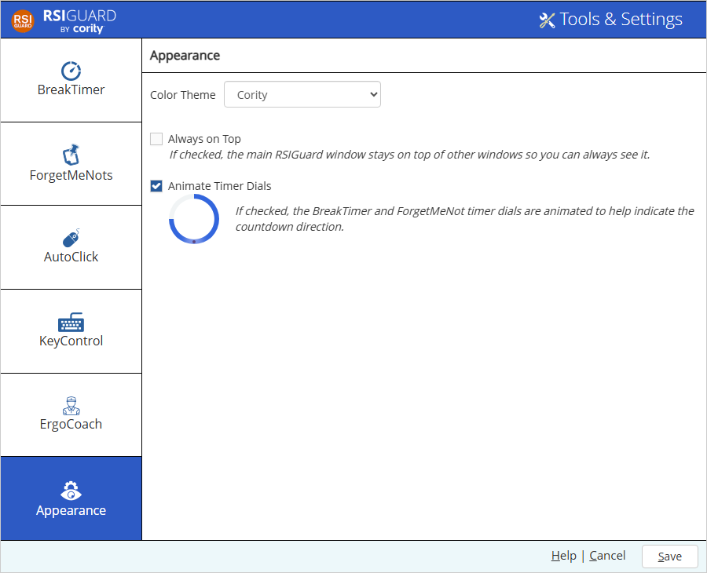

Tools menu of the main RSIGuard window. Select Settings. Select the Appearance tab on the left.
Tools menu of the main RSIGuard window. Select Settings. Select the Appearance tab on the left.In v6.2.15, RSIGuard introduced features to adjust RSIGuard's color theme and other visual settings. To access these, click the Tools menu of the main RSIGuard window. Select Settings. Select the Appearance tab on the left.

Click the Color Theme to select the theme you'd like to use.
If you'd like RSIGuard to always be on top of other applications so it's always visible, check "Always on Top".
To help make it clear how the break and ForgetMeNots/Microbreak timers count down, you can check "Animate Timer Dials". This adds a subtle animation to the dial to indicate the direction of countdown and to make clear which part indicates countdown. The animation uses a small additional amount of your computer's resources.